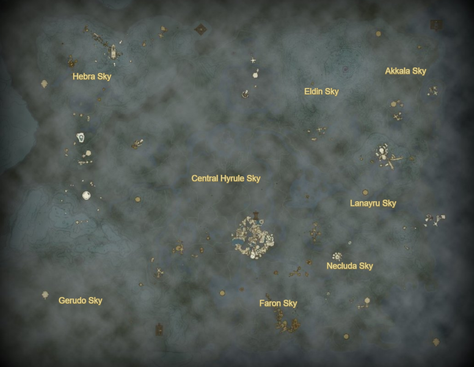

The Legend of Zelda Tears of the Kingdom Device Dispenser Map
Use commas to seperate queries. Example: "wing, fan, cart" Hover over a dispenser to see its contents. This map doesn't include dispensers on the surface and in the depths.
Dispenser Contents